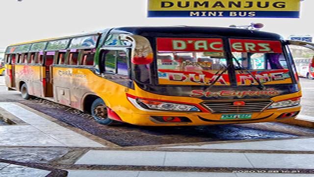

BUS LINERS
Below are the list of Bus Liners that are partners with GaBUS. Travelers can enjoy their services with the use of GaBUS website.
Ceres Liner
Ceres bus is a bus company in the Philippines under the Yanson Group of Bus Companies. It is the biggest bus company in the Philippines with 12 bus companies under them. They have approximately 4,800 bus units run by 18,000 employees. It has 15 bases of operations in the Visayas and MIndanao with some in Luzon.

Sunrays
Sunrays Bus was the cheapest and most convenient mode of transportation. The employees' efficiency in running the firm. Because of the company's policy of safe driving, only drivers who pass a drug test and a driving test are hired. That is admirable, because as a bus driver, passenger safety is always a priority.


Librando
People heading south to Badian used to take the Librando bus. It was reasonably priced, they arrived on time, and it was clean. The bus ride to Badian town takes roughly 3 hours.


Sugbo Transit
Sugbo Transit buses are wheelchair-accessible, GPS-enabled, and CCTV-equipped, making them a safe, secure, and friendly mode of transportation in Cebu. It also has FREE WIFI! Each bus has seating for 42 to 90 people, including standing passengers.
Others
A minibus is a passenger vehicle with a capacity greater than that of a multi-purpose vehicle. This bus travels to mountainous regions and provinces such as Bato-Barili.

Terminals
The terminals are the start of the journey in Cebu.The Cebu North bus and South bus terminal is the gateway to whole Queen city of the south.Travelers can also ride buses bound for nearby islands and provinces. Check out the rest of our article for routes, operating hours, and more information on Cebu South and North Bus Terminal.